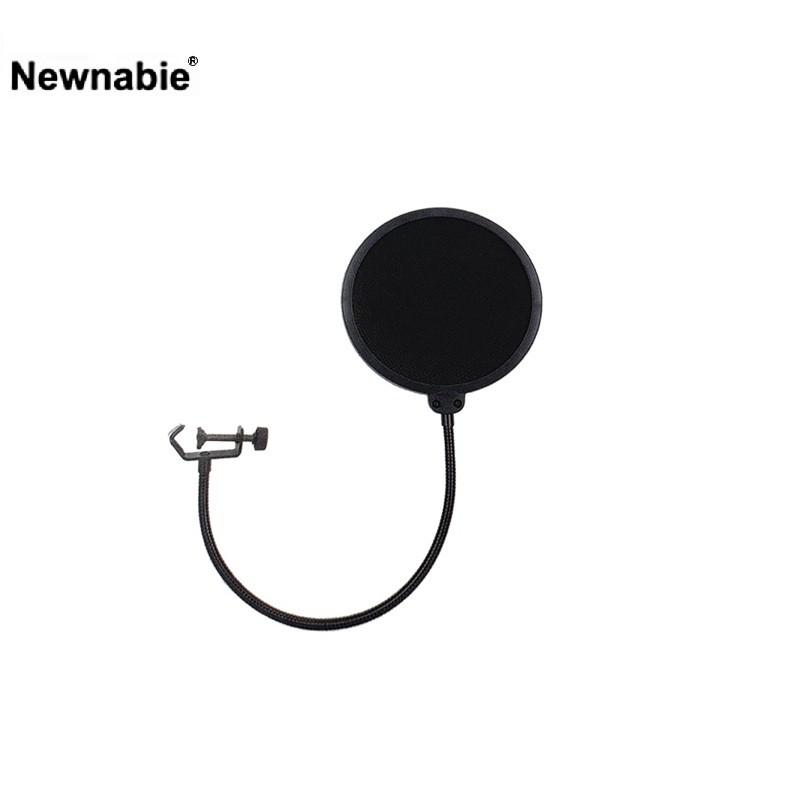

T-3는 녹음 · 팟캐스트 · 방송 스튜디오에서 보컬 수음 시 발생하는 팝 노이즈(강한 파열음 · 숨 바람)를 효과적으로 차단해 주는 Φ150 mm 팝 필터입니다. 500 mm 길이의 구스넥 붐으로 마이크 스탠드에 체결해 정확한 위치와 각도에 팝 필터를 세팅할 수 있습니다.

보컬 수음 시 파열음(팝 노이즈)을 차단해 주는 스튜디오 표준 팝 필터. 마이크 스탠드에 체결하는 구스넥 붐 타입입니다.
T-3는 "P", "B", "T" 발음 시 마이크 캡슐에 직접 부딪히는 강한 공기 펄스(팝 노이즈)를 여과해 주는 Φ150 mm 크기의 팝 필터입니다. 필터 표면의 메쉬가 발화자의 숨 바람을 분산시켜, 보컬의 자연스러운 톤은 유지하면서 불필요한 팝 노이즈만 걸러냅니다.
필터 본체에는 500 mm 길이의 구스넥 붐이 연결되어 있어, 마이크 스탠드의 수직 포스트 또는 붐 암에 클램프로 체결한 뒤 구스넥을 자유롭게 구부려 마이크와의 거리 · 각도를 정밀하게 세팅할 수 있습니다. 일반적으로 보컬 마이크로부터 3–5 cm 거리에 두어 사용합니다.
| 모델명 | T-3 |
|---|---|
| 타입 | Studio Pop Filter (구스넥 클램프형) |
| Filter Size | Φ150 mm |
| Boom Length | 500 mm (구스넥) |
| Net Weight | 0.25 kg |
| 권장소비자가 | 18,700 원 / 개 (VAT 포함) |
※ 본 사양 · 단가는 수입원(현대에이브이씨) 2026-01-01 스탠드 가격표 기준입니다.